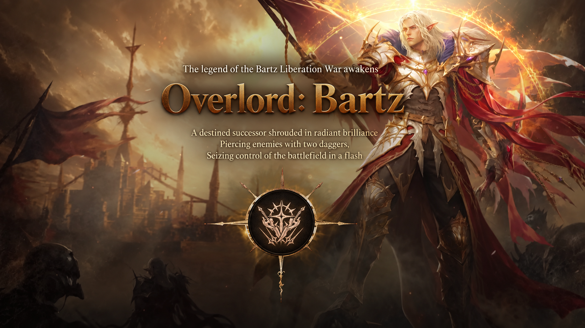
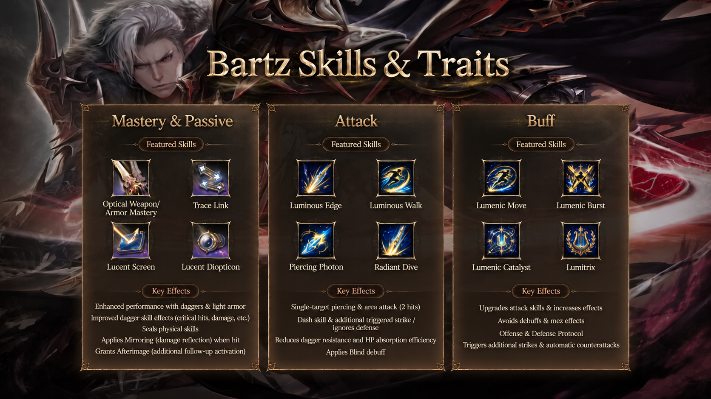

With just one week left until the launch of Lineage II: BASIC, NCSOFT has revealed more details about Overlord: Bartz, the new dual-dagger class inspired by the legendary Bartz Liberation War.
Until now, we had mostly seen promotional artwork and short combat previews. This week's update finally gives us something more interesting to look at: twelve representative skills, divided into three categories, along with a summary of their effects.
And from what we've seen, Bartz is shaping up to be more than just another dagger class.
Based on NCSOFT's Korean class preview. The images below are English adaptations; class and skill names follow those adaptations and are provisional.


Daggers, mobility, and a few tricks
The new skill showcase is divided into Mastery & Passive, Attack, and Buff.


The passive side establishes the basics. Bartz benefits from using daggers and light armor, with additional improvements to dagger skills, including critical performance and damage. But the interesting part is what comes alongside those bonuses.
NCSOFT also mentions physical skill sealing, damage reflection through a Mirroring effect, and Afterimage, which can trigger additional follow-up effects.
Those mechanics suggest that Bartz won't rely exclusively on landing powerful blows. There's some disruption and defensive utility mixed into the class as well.
A fast-paced offensive kit
The attack skills are where the class starts to look particularly fun.
Luminous Edge, Luminous Walk, Piercing Photon, and Radiant Dive make up the four featured offensive skills.
According to the overview, Bartz has access to single-target piercing attacks, two-hit area attacks, and rushing abilities that let him close the distance quickly.
The offensive toolkit also includes additional triggered hits, defense-ignoring effects, reduced dagger resistance, and decreased HP absorption efficiency. A Blind debuff adds another way to interfere with opponents.
For anyone who enjoys fast melee classes, the combination looks promising. There's an emphasis on staying mobile, chaining attacks, and putting pressure on a target rather than simply trading hits.
Of course, we'll need to see the actual cooldowns, damage values, and triggering conditions before making any serious balance comparisons.
Buffs that do more than increase stats
The third group features Lumenic Move, Lumenic Burst, Lumenic Catalyst, and Lumitrix.
These skills appear to enhance Bartz's offensive abilities while also providing ways to avoid debuffs and crowd-control effects.
NCSOFT also highlights Offense & Defense Protocol, with effects involving additional attacks and automatic counterattacks.
That's probably the detail I'm most curious to see in practice. Depending on how frequently these effects activate, they could have a considerable impact on the way Bartz performs in prolonged fights, especially in PvP.
For now, though, we're looking at a promotional overview rather than complete skill descriptions. There are still plenty of numbers missing.
What does this mean for BASIC?
Bartz seems to have a fairly modern toolkit: high mobility, multiple attack triggers, debuffs, and defensive reactions.
That might sound a little different from the slower progression philosophy NCSOFT has been promoting for BASIC, but the two aren't necessarily incompatible.
A slower server doesn't have to mean slower combat.
The real question is how this new class will fit into the broader environment, particularly when equipment is supposed to take longer to acquire and upgrades are meant to matter more.
We'll be especially interested in seeing how Bartz performs against existing classes, both while hunting and in competitive PvP.
A quick reminder about pre-registration rewards
Another change ahead of launch concerns how the starting equipment is presented.
The current official pre-registration preview no longer lists the enchantment bonuses shown in the original announcement:
- Falchion Exchange Coupon: Previously listed as +7; no enchantment level is now specified.
- Bronze Armor Exchange Coupon: Previously listed as +5; no enchantment level is now specified.
- Growth Support Pack: Still listed among the rewards.
This suggests that starting gear may no longer be pre-enchanted, although the current preview does not explicitly confirm a +0 enchantment level.
If that is the final reward setup, it would fit the server's focus on gradual progression and obtaining and improving equipment through regular gameplay.
One week to go
Overlord: Bartz now has a much clearer identity, even if we still need the full skill details to understand how everything works.
As for BASIC itself, the bigger questions haven't changed much. Progression rates, automation, monetization, and the finer details of the economy are still the things we'll be watching most closely.
Lineage II: BASIC is scheduled to launch in Korea on .
If you missed the original announcement, our previous BASIC overview covers the server concept, progression philosophy, crafting, hunting, and economy in more detail.